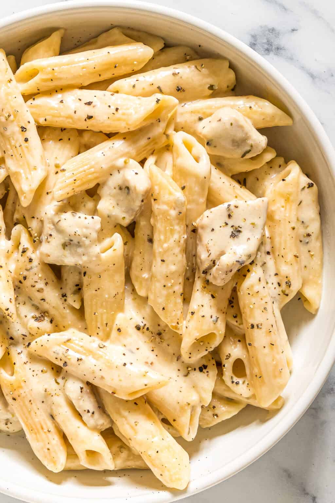

Odin Recipes

Listing of ingredients
- 1.5 lbs of boneless skinless chicken breast
- 2 blocks of cream cheese
- 1 stick of butter
- 2 cups of milk
- 4 cloves or garlic
- 6 oz of shredded parmeson cheese
- ground pepper
Preperation Steps
- Beging frying Chicken in frying pan,cook and flip until done
- Boil Water for pasta, cook until done. Choose how you prefernce your noods.
- Strain Pasta, set aside.
- Melt butter down in sauce pan.
- Cube cream cheese, and whisk into melted butter.
- Slowly add 2 cups of milk while whisking
- Add in seasonings(garlic, ground pepper>
- Add Shredded parmeson cheese, continue whisking until smooth.
- Cude or dice chicken